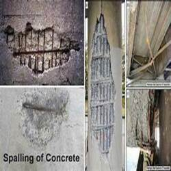

-
Talk to Your Houston Concrete Supplier About Spalling
Posted on May 20, 2022 by Phoebee Johnson

Talk to your Houston concrete supplier about spalling concrete to see if you can repair the issue or need concrete replacement.
If your concrete is spalling, you might be looking for ways to repair it. As a Houston concrete supplier, we have some tips and information about spalling concrete to help you keep your concrete surfaces and structures in good condition.
Spalling Concrete? Ask Your Houston Concrete Supplier for Help
If you have spalling concrete, you need to act fast, as the damage will typically continue to spread. In some cases, you may be able to repair the damage and prevent it from spreading to the rest of the concrete. However, if the spalling is due to structural issues, then you may need to replace the concrete.
What is Spalling Concrete?
So, what exactly is spalling? This is where your concrete looks like it’s flaking away on the surface. Spalled concrete might look patchy or pitted and typically exposes the aggregates underneath the surface, or sometimes even the reinforcing material in severe cases.
Many times concrete spalling occurs due to freeze-thaw cycles making the concrete expand and contract. However, since we don’t have that problem in Houston, usually it’s a sign of something else wrong with your concrete, like:
- Rust on steel reinforcements
- Fire exposure
- Improperly constructed joints
- Excess water in the concrete mixture during pouring
- Improper concrete finishing techniques
One of the best ways to prevent concrete spalling is to work with an experienced Houston concrete supply to ensure you receive the right mixture for your application. Using the wrong mix or even mixing the formula in the wrong way can lead to weaker concrete that is more prone to spalling.
How to Repair Spalling Concrete?
Repairing spalling concrete is possible in some cases. If the spalling is less than ⅓ of the total depth of the concrete, then it may be repairable. Of course, you should always check for structural integrity as well.
To repair spalled concrete, you first need to remove the pieces that have broken away from the main structure and clean the area. If there’s rust on the reinforcement, then you’ll also need to thoroughly clean and remove the rust and follow up with an anti-rust coating. Once clean, you can typically repair small areas with a repair compound, which is usually a mix of cement and epoxy.
Replacing Spalled Concrete with Ready Mix from Your Houston Concrete Supplier
However, if the damage is severe and covers most of the concrete, or if it’s due to a more fundamental problem with your concrete structure, then you may need to replace it with new concrete from your Houston concrete supplier. For instance, if most of the surface has broken away or if the cause of the spalling is poor quality concrete or finishing, then the structure may not be strong enough for your application. In these cases, it’s better to remove the old concrete and pour new concrete. Our team can precisely formulate and mix custom concrete mixes based on your exact needs. We take care of mixing and delivery in our fleet of Houston cement mixing trucks equipped with GPS technology to ensure your concrete is always delivered at exactly the right time for your project and concrete reliability.
Top Houston Concrete Supply – TEXAN Concrete Ready Mix
Trust our experts at TEXAN Concrete Ready Mix with your concrete needs. Our certified technicians are here to help you create the perfect concrete formula for your commercial or residential projects. We use only the best materials, including ASTM-approved aggregates and the Alkon Spectrum 6 system to mix your concrete in exact proportions. Contact us now to get a free quote for ready mix concrete!
This entry was posted in Concrete, Concrete Maintenance. Bookmark the permalink.